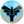
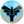

Introdução
Os membros do clã Wingeon são muito isolados das cidades. Eles preferem viver entre os Pokémon do tipo  Flying e Dragon nas montanhas mais altas.
Os membros do clã Wingeon são muito isolados das cidades. Eles preferem viver entre os Pokémon do tipo  Flying e Dragon nas montanhas mais altas.
Acesse a página de Tasks do clã Wingeon para conferir os requisitos necessários em cada um dos Rankings.
O bônus máximo do clã é aplicado ao completar as tarefas do Rank 5. Abaixo estão as porcentagens de bônus adquiridas:
Flying: Atk 28%, Def 28% Dragon: Atk 28%, Def 28%Tier é uma classificação comum entre os Pokémon, indicando não apenas a raridade deste dentro do jogo, mas também qual executará melhor uma função, contanto que a comparação seja realizada entre dois Pokémon de mesma função. O Tier e a Função de um Pokémon pode ser conferido na PokedexIcon.png Pokédex (Atalho Shift + D). Caso deseje ler mais sobre, acesse a página Tier e Funções ou Tiers (listagem) para conferir a listagem de Tier de todos os Pokémon.
Para facilitar a leitura desta página, a tabela a seguir contém a legenda de todas as Funções, PvP e PvE disponíveis no jogo.

Abaixo estão listados todos os Pokémon do clã Wingeon e suas respectivas funções, separados por Tier.


Observação: O Pokémon Shiny Gyarados é considerado tanto PvP como PvE.


*Observação: Apesar de receber o bônus de clã Wingeon, os Pokémon Mega Charizard X e Mega Ampharos não entram na contagem de Pokémon deste clã, por terem seu uso exclusivo em outros clãs no PvP.

Observação: Os Pokémon T1H tem força de T1C fora da Nightmare World e são acima dos T1C dentro dela ou pelo menos tem um diferencial perante os demais Pokémon. São balanceados exclusivamente para conteúdos PvE e não podem ser utilizados em duelos PvP.


*Observação: Os Pokémon Gyarados, Tropius e Vespiquen são dedicados a outro clã, apesar de receberem bônus deste clã pela tipagem.
**Observação: Apesar de receber o bônus do clã Wingeon, o Pokémon Archeops não entra na contagem de Pokémon deste clã, por ter seu uso exclusivo de outro clã no PvP.
***Observação: O Pokémon Kingdra é considerado tanto PvP como PvE.

*Observação: Os Pokémon Togetic, Xatu e Shiny Delibird são dedicados a outros clãs, apesar de receberem o bônus deste clã pela tipagem.

Rotação Mid-Late Game: Shiny Fearow (Offensive Tanker), Shiny Beautifly (Offensive Tanker), Mega Pidgeot (Burst Damage Dealer), Shiny Noctowl (Burst Damage Dealer), Crobat (Burst Damage Dealer) e Staraptor (Burst Damage Dealer).

Rotação Mid-Late Game: Não existe uma rotação do tipo Dragon , entretanto, o Pokémon Garchomp é um Burst Damage Dealer Interface e pode ser útil em diversos conteúdos.

Observação: A exclusividade é aplicada apenas em conteúdos PvP. No PvE, o uso é liberado para todos os clãs.
Para obter um Shiny Fearow, fale com a NPC Donna, localizada na área do Clã Wingeon, no Trade Center.

Para obter um Shiny Togetic, fale com a NPC Donna, na área Wingeon, na resistência de Cerulean.

Abaixo são apresentadas as efetividades dos Pokémon deste clã, considerando apenas aqueles que possuem um elemento. A efetividade pode mudar caso o Pokémon possua dois elementos ou possua alguma resistência à algum elemento, como é o caso do Mega Pinsir que possui a passiva Bug Armor, permitindo que ganhe resistência contra ataques do tipo Ice (1x).
A efetividade de um Pokémon pode ser conferida na Pokédex ou realizando uma busca na página Pokémon (uso do Ctrl+F recomendado). Clique no ícone do elemento desejado para conferir a tabela de efetividade deste clã.
Flying DragonMais informações poderão ser adquiridas acessando a página Efetividades.

Página Principal